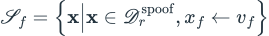
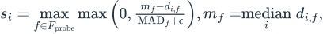
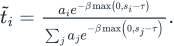
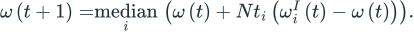

整体概括
十客户端中两个被控，自报准确率抬高后门
论文研究无人机集群用联邦学习训练 GPS 欺骗检测器：客户端在本地逐历元接收机观测上训练，协调者按客户端自报的验证准确率分配聚合权重。作者构造的组合攻击中，十个客户端里两个被控，二者污染部分欺骗样本、放大模型更新并虚报准确率。在固定数据划分与种子上，准确率加权聚合的后门提升达到 +0.3036，高于同等攻击下 FedAvg 的 +0.2415。
对照原文证据
We investigate an attack that combines poisoned model updates with inflated client-reported accuracy. With two compromised clients among ten, the evaluated accuracy-weighted rule gives a backdoor lift of +0.3036 , compared with +0.2415 under attacked FedAvg.Each client evaluates its trained model on a local validation set and submits its reported accuracy \mathrm{Acc}_{i} and updated parameters \omega_{i}^{I}(t) . The coordinator computes \lambda_{i}=\mathrm{Acc}_{i}/\sum_{k}\mathrm{Acc}_{k} and aggregates the models as协调者用反事实探针替代自报指标
防御把评估搬到协调者侧：协调者持有一小份从未与客户端共享的干净根集，对每个有判别力的接收机特征构造反事实切片，把该特征替换为良性高值而保留欺骗标签，再比较各客户端模型在切片上的召回。可疑度按队列中位数与 MAD 归一化，经死区与指数门控变成信任权重，最后用逐坐标中位数聚合。IID 划分下，后门提升降到 -0.0265，并标出被控客户端。
对照原文证据
For the proposed defense, we assume the coordinator holds a small clean root set \mathcal{D}_{r} , drawn from its own trusted collection and never shared with clients.by replacing feature f in each spoofed root-set observation with v_{f} . The other |F|-1 features remain unchanged, and we retain the spoofed label. Each probe thus differs from its original spoofed observation in one feature, which corresponds to the input modified by the trigger.where \mathrm{MAD}_{f}=\operatorname{median}_{i}|d_{i,f}-m_{f}| . The term m_{f}-d_{i,f} measures the client’s recall deficit on slice f . Dividing by \mathrm{MAD}_{f}+\epsilon accounts for variation across clients, and taking the maximum identifies the feature with the largest normalized deficit.With independent and identically distributed (IID) client data, our method reduces backdoor lift to -0.0265 and flags the compromised clients.单接收机模拟客户端，不是实飞集群
所有结果来自一个公开软件无线电 GPS 欺骗数据集；原文明确说数据只有一个接收机，实验把数据划分成模拟客户端，不代表已部署的多无人机系统。因此这里的“客户端”是统计分区，不是不同机体、不同天线或不同飞行轨迹。结论适用于该数据集与给定攻击配置，不能直接外推为真实机队的飞行安全保证。
对照原文证据
We use the software-defined-radio GPS spoofing dataset in [ 16 ] to simulate the UAV clients. Because the dataset contains observations from a single receiver, our experiments evaluate the aggregation mechanisms under simulated client partitions and do not represent a deployed multi-UAV system.We evaluate the approach using a public single-receiver dataset partitioned into simulated UAV clients and examine its limitations under strong client heterogeneity.Research gap
贡献度加权已有研究，自报指标安全被忽略
作者回顾，已有无人机联邦学习研究把检测性能、行为与贡献频率等纳入聚合权重，说明评估客户端贡献很重要。但当自报准确率直接决定权重时，协调者无法用客户端私有验证集核实声明，被控机体可以夸大报告来放大影响。作者认为，模型投毒与自报准确率操纵的组合在 UAV-FL 场景中尚未被直接检验，这是本文要补的缺口。
对照原文证据
Several studies have considered client quality, reputation, and contribution metrics when determining aggregation weights. Chai et al. [ 5 ] considered detection performance, and Ud Din et al. [ 2 ] incorporated behavioral and contribution-frequency metrics.If a client’s reported accuracy determines its aggregation weight, a compromised UAV can inflate that report to increase its influence on the global model. The coordinator cannot verify the claim using the client’s private validation data, which introduces another attack surface in addition to the model update.However, these studies do not directly examine combined model poisoning and manipulation of self-reported accuracy in the UAV-FL setting considered here.看更新方向不够，改看接收机行为
作者把 FLTrust 作为最接近的参照：它也使用协调者干净参考集，但比较的是客户端更新与服务器更新的方向。作者认为，局限于输入空间小区域的后门，可能在整体更新方向上信号很弱；而 GPS 欺骗检测有接收机域特征可做干预。于是防御目标写成四条：协调者可计算、在探测集内不依赖具体触发特征、不需要配置攻击者数量、还能给出客户端级归因。
对照原文证据
FLTrust [ 15 ] also uses a clean reference dataset, but measures the alignment of client updates with a server update. Such an update-direction comparison may provide limited information about backdoor behavior confined to a small region of the input space.We therefore design our method around four requirements: (R1) Coordinator-computable : all inputs to the aggregation weights are available to the coordinator; (R2) Trigger-agnostic within the probed set : the coordinator does not know f^{\star} ; (R3) No configured attacker count : the method does not require the Byzantine-tolerance parameter f used by Krum, Multi-Krum, and trimmed mean, although we assume an honest majority; and (R4) Attributive : the method should identify suspicious clients.算法主线

原图由 arXiv 加载；若未显示，可打开下方原图链接。
跟着原图读
- 先看两条上行链路
诚实客户端把本地训练后的 ω_i 与自报 Acc_i 交给协调者；被控客户端交的是 poisoned model weights ω_m 和被夸大的 Acc_m。图里协调者没有独立验证这些报告的通道，这正对应正文说的自报指标攻击面。
- 再看红色回路
红色箭头从被控客户端回到协调者，旁边写 λ_m→max：虚报准确率提高该客户端在准确率加权中的份额。另一条红色回路表示被放大的 poisoned update。两者合起来才是完整攻击，单看模型投毒不够。
- 最后确认图里没有防御流程
这张图只画系统与威胁模型，没有根集、反事实切片、MAD 可疑度、信任门控或中位数聚合。因此不能从图中判断防御是否有效，也不能把红色被控端的存在读成攻击已被阻止。
图中 N-M 是符号化客户端数，不是实验中的真实机队规模；实验是一个公开单接收机数据集划分出的模拟客户端。也不能从无人机图片、红色标记或箭头推断攻击者比例、飞行安全后果或防御性能。
一轮联邦训练与自报准确率加权
每轮协调者广播全局模型，客户端在私有逐历元接收机观测上做若干步本地训练，然后交回模型参数与本地验证准确率。聚合后的全局模型再下发给客户端，用于逐历元真实/欺骗分类。聚合权重取该报告除以所有报告之和，因此权重非负且归一，聚合是提交模型的凸组合；若所有客户端报告相同，就退化为普通 FedAvg。问题在于协调者只收到模型和标量报告，没有独立数据核验，报告本身成为可操纵的输入。
对照原文证据
We consider N UAV clients, denoted by \mathcal{U}=\{U_{1},\dots,U_{N}\} , each with a private dataset \mathcal{D}_{i} of per-epoch GPS receiver observations labeled authentic or spoofed. In round t , the coordinator broadcasts the global model \omega(t) , and each client performs I local training steps,Each client evaluates its trained model on a local validation set and submits its reported accuracy \mathrm{Acc}_{i} and updated parameters \omega_{i}^{I}(t) . The coordinator computes \lambda_{i}=\mathrm{Acc}_{i}/\sum_{k}\mathrm{Acc}_{k} and aggregates the models asSince \sum_{i}\lambda_{i}=1 , Eq. ( 2 ) gives a convex combination of the submitted models and reduces to FedAvg when all clients report the same accuracy. However, the coordinator does not validate these reports using independent data. It receives the models and accuracy reports but has no access to the private datasets \mathcal{D}_{i} .威胁模型：少数客户端可控，但不能碰根集
攻击者控制 M 个客户端，要求 M<N/2，并完全掌握其本地数据、模型更新与上报指标；但不能读取或修改诚实客户端的数据与更新，不能提前观察更新，也不能访问协调者根集或改变聚合规则。论文明确需要诚实多数，因为可疑度依赖队列中位数与 MAD；若被控客户端过半，它们的行为可能主导队列统计。这个假设是机制成立的前提，不是“无需任何攻击假设”。
对照原文证据
Capabilities. The adversary controls M clients in a subset \mathcal{M}\subset\mathcal{U} , where M<N/2 . It has full control over their local training data, model updates, and reported metrics. The adversary cannot access or modify honest clients’ data or updates, observe their updates before aggregation, access the coordinator’s trusted root set \mathcal{D}_{r} , or change the aggregation rule.We assume an honest majority because the cohort statistics in Section III-B depend on most participating clients being honest. When compromised clients form a majority, their responses may dominate these statistics and undermine the trust mechanism.三段式攻击：边缘投毒、更新放大、准确率虚报
攻击分三步。第一步只污染被控客户端一部分欺骗样本：把判别特征 f* 换成真实分布的第 75 百分位良性高值，并把标签改为真实，使单特征范围检查看不出异常。第二步按模型替换思路把更新放大 γ 倍；作者用 γ=3.0，低于单攻击者完全替换所需的约 N 倍。第三步把自报准确率抬到 0.99，使聚合权重靠近单客户端上限；它不改模型，也没有计算成本。
对照原文证据
A1: marginally benign poisoning. For a fraction p of U_{m} ’s spoofed rows, the adversary replaces one discriminative feature f^{\star} with its benign-high value v_{f^{\star}} , defined as the 75 th percentile of the authentic distribution, and changes the label to authentic. This feature value lies within its benign marginal range and therefore passes a per-feature range check.With one attacker and uniform aggregation weights, full model replacement requires approximately \gamma=N . We use \gamma=3.0 , which is below this full-replacement scale.A3: accuracy inflation. The compromised client reports \widehat{\mathrm{Acc}}_{m}\gg\mathrm{Acc}_{m} , which increases \lambda_{m} in Eq. ( 2 ) toward the maximum weight available to one client. This step does not change the poisoned model and has no computational cost.We use p=0.40 , \gamma=3.0 , and \widehat{\mathrm{Acc}}_{m}=0.99 .防御数据流：切片、召回、信任与中位数
协调者先按 Cohen d 阈值 0.05 挑出有判别力的特征；对每个特征，把根集里每条欺骗样本的该维替换为良性高值，其他维不动，标签仍保留为欺骗，得到一条反事实切片。然后在同一批切片上比较各客户端模型的欺骗召回：若某模型在触发特征对应的切片上召回明显偏低，就可疑。可疑度由各客户端召回相对队列的差异得到，经死区与指数门控得到信任，再做跨轮 EMA，最后逐坐标取中位数聚合。
对照原文证据
We select the discriminative features F_{\mathrm{probe}} using a class-separation threshold of Cohen’s d\geq 0.05 . For each f\in F_{\mathrm{probe}} , let v_{f} be its benign-high value. We construct a probe sliceby replacing feature f in each spoofed root-set observation with v_{f} . The other |F|-1 features remain unchanged, and we retain the spoofed label. Each probe thus differs from its original spoofed observation in one feature, which corresponds to the input modified by the trigger.An honest model may still classify some probe samples as authentic because the overwritten feature removes evidence of spoofing. We therefore compare client responses on the same slice. A model trained with the trigger on f^{\star} is expected to have lower spoofing recall on \mathcal{S}_{f^{\star}} than honest models. We measure this deficit using Eq. ( 5 ).We apply the penalty only when suspicion exceeds \tau . In development runs, this reduced honest false flags from 20.5\% to 0.3\% without reducing attacker flagging. The exponential gate yields positive preliminary trust when a_{i}>0 . We smooth trust across rounds using an exponential moving average (EMA), t_{i}(t)=\rho\tilde{t}_{i}(t)+(1-\rho)t_{i}(t-1) , with t_{i}(0)=1/N . Finally, we aggregate the scaled updates using a coordinate-wise median:关键公式
聚合式：权重来自报告，凸组合不消除谎报
所选聚合式把全局模型写成上一轮模型加上各客户端更新差的加权和，权重 λ_i 由自报准确率归一化得到，无量纲且总和归一。它在所有报告相同时退化为普通平均，所以公式本身不区分诚实与虚报；虚报只是把 λ 推向单客户端上限。实现时要固定归一化分母、处理零准确率与数值下溢，并注意各客户端的验证集类别比例不同，准确率并非天然可比。
对照原文证据
The coordinator computes \lambda_{i}=\mathrm{Acc}_{i}/\sum_{k}\mathrm{Acc}_{k} and aggregates the models asSince \sum_{i}\lambda_{i}=1 , Eq. ( 2 ) gives a convex combination of the submitted models and reduces to FedAvg when all clients report the same accuracy.which increases \lambda_{m} in Eq. ( 2 ) toward the maximum weight available to one client.探针与可疑度：中位数、MAD 与单侧最大缺口
切片式把一个欺骗样本的第 f 维替换为良性高值 v_f，其余维度保持，标签仍为欺骗；v_f 取真实分布第 75 百分位，CN0 对应 46.706 dB-Hz。可疑度式用客户端在该切片上的召回 d_i,f 相对队列中位数 m_f 的缺口，除以 MAD_f 加小常数 ε，再对所有探测特征取最大。d 与 MAD 都是召回比例，s_i 因而以 MAD 为单位、无量纲；取最大是为了保留局部异常，取单侧是因为只关心召回偏低。
对照原文证据
by replacing feature f in each spoofed root-set observation with v_{f} . The other |F|-1 features remain unchanged, and we retain the spoofed label. Each probe thus differs from its original spoofed observation in one feature, which corresponds to the input modified by the trigger.We set v_{f} to the 75 th percentile of the authentic distribution, which matches the marginally benign trigger construction in our experiments. The resulting samples lie within the benign range of the modified feature, although their joint feature values may still be out of distribution. For CN0, we use v_{f}=46.706 dB-Hz. By constructing a slice for every f\in F_{\mathrm{probe}} , we can test the evaluated trigger without knowing which probed feature carries it.where \mathrm{MAD}_{f}=\operatorname{median}_{i}|d_{i,f}-m_{f}| . The term m_{f}-d_{i,f} measures the client’s recall deficit on slice f . Dividing by \mathrm{MAD}_{f}+\epsilon accounts for variation across clients, and taking the maximum identifies the feature with the largest normalized deficit.We use the median and median absolute deviation (MAD) because the cohort may include compromised clients. These statistics tolerate contamination of fewer than half the observations, consistent with our assumption M<N/2 . We also use the maximum across features to preserve localized anomalous responses that could be diluted by averaging across |F_{\mathrm{probe}}| slices. The one-sided statistic penalizes low recall, while normalization accounts for changes in honest recall during training.信任门控与中位数聚合：死区、EMA 与 N 倍缩放
初步信任式用根集准确率 a_i 乘指数门控，门控只在可疑度超过死区 τ 后生效，β 控制下降陡度；分母归一化使各客户端初步信任之和为一。随后用 EMA 平滑，ρ 越大越重视本轮。聚合式先按客户端数 N 放大信任后的更新差，再逐坐标取中位数；N 倍是因为信任归一化后总和为一，若不放大，更新步长会随客户端数缩小。中位数不是凸组合，它逐维选中间值，因而能压低少数异常更新，但也可能把不同客户端的坐标拼在一起。
对照原文证据
We convert suspicion into a preliminary trust weight using the dead zone \tau , gate parameter \beta , and clean-root accuracy a_{i} :The exponential gate yields positive preliminary trust when a_{i}>0 . We smooth trust across rounds using an exponential moving average (EMA), t_{i}(t)=\rho\tilde{t}_{i}(t)+(1-\rho)t_{i}(t-1) , with t_{i}(0)=1/N .The factor N preserves the scale of the updates. With uniform trust, Nt_{i}=1 and Eq. ( 7 ) reduces to the coordinate-wise median of the submitted models.Coordinate-wise median aggregation limits the influence of outlying updates even when the probe-based scores become less informative. The coordinator computes every quantity in Eqs. ( 4 )–( 7 ) from its trusted data and the submitted models. Since the proposed rule does not use \mathrm{Acc}_{i} , the accuracy-inflation component A3 has no direct effect on the aggregation weights.按自报准确率加权的聚合
全局模型等于上一轮模型加上各客户端更新差的加权和；权重由自报准确率归一化，所有客户端报告相同时退化为普通 FedAvg。它把“谁更准”直接变成“谁说话更响”，但准确率是客户端自己报的。
符号与实现提醒
- lambda_i
- 客户端 i 的聚合权重，无量纲，非负且总和归一。
- Acc_i
- 客户端在本地验证集上自报的准确率标量，不是协调者复算值。
- omega_i^I(t)
- 客户端 i 经 I 步本地训练后的参数。
- omega(t)
- 上一轮全局模型参数。
报告未经独立数据核验；虚报会提高 lambda_i。各客户端验证集的类别比例、样本量可能不同，准确率并非天然可比。实现时要固定分母、处理全零报告和数值下溢。
单特征反事实探针切片

从协调者根集的欺骗样本出发，只把第 f 个特征替换为良性高值，其他特征和欺骗标签保留。每个探针相对原样本只改一维，用来模拟触发特征被改成良性值时模型的反应。
符号与实现提醒
- S_f
- 针对特征 f 的探针切片集合。
- D_r^spoof
- 协调者可信根集中的欺骗样本。
- x_f <- v_f
- 把样本第 f 维赋为良性高值。
- v_f
- 真实分布第 75 百分位；CN0 取 46.706 dB-Hz。
单维替换后的样本在联合分布上可能仍属异常，不是物理上可实现的欺骗信号；不同特征单位不同（dB-Hz、Hz、m），不能直接比较原始差值。切片只覆盖被探测特征，未探测特征上的触发不在保证范围内。
相对队列中位数的可疑度

对每个探针切片算客户端欺骗召回 d_i,f，取队列中位数 m_f，用低于中位数的缺口除以 MAD_f 加小常数，再对所有特征取最大。它衡量的是“比同伴低几个 MAD”，不是绝对召回。
符号与实现提醒
- s_i
- 客户端 i 的可疑度，以 MAD 为单位，无量纲。
- d_i,f
- 客户端 i 在切片 f 上的欺骗召回，0 到 1 的比例。
- m_f
- 所有客户端在切片 f 上召回的中位数。
- MAD_f
- 召回的中位绝对偏差，与 d 同单位。
- epsilon
- 防止除零的小常数。
中位数与 MAD 只有在污染少于一半时才稳健；强异质会抬高 MAD，使同样的绝对缺口变小。取最大保留局部异常，但也放大单切片噪声；d_i,f 由有限根集估计，需报告样本量与置信区间。
死区与指数门控的信任权重

初步信任由根集准确率 a_i 乘以指数惩罚项，再跨客户端归一化。可疑度未超过死区 tau 时不罚；超过后按 beta 平滑降权。它把“行为可疑”转成聚合权重，而不是硬性剔除。
符号与实现提醒
- t̃_i
- 本轮初步信任权重，无量纲，总和归一。
- a_i
- 协调者在根集上复算的客户端模型准确率。
- s_i
- 上式的可疑度，以 MAD 为单位。
- tau
- 死区阈值，与 s_i 同单位；小于等于它不罚。
- beta
- 指数门控斜率，控制超过死区后的下降速度。
a_i 来自根集，根集标签污染会直接偏置信任；t̃_i 不是校准概率。beta=1.0、tau=2.0 是本文固定值，换数据需重调。a_i 为零时初步信任为零，需定义回退。
逐坐标中位数聚合

先按客户端数 N 放大信任后的更新差，再对每个参数坐标独立取中位数。N 倍是为了在信任总和归一后保持更新尺度；信任均匀时退化为提交模型的中位数。
符号与实现提醒
- omega(t+1)
- 新一轮全局模型。
- median_i
- 对客户端集合逐坐标取中位数。
- N
- 客户端总数。
- t_i
- 经 EMA 平滑后的信任权重。
- omega_i^I(t)
- 客户端 i 的本地更新后参数。
逐坐标中位数不是凸组合，可能把不同客户端的坐标拼在一起；它也不是模型空间的中位数。零信任客户端的更新差变为零，仍以当前全局模型参与该坐标投票。EMA 有滞后，攻击者接近一半时中位数的稳健性下降。
实验怎么做
单接收机数据划成十个客户端
实验用公开软件无线电 GPS 欺骗数据集，保留十个信号质量特征，八个通过 d≥0.05 进入探测集；抽取 150,000 行按 60/40 划出 30,000 行测试、6,000 行根集、114,000 行训练，分给十个客户端，两个被控。模型是 10-64-32-16-1 的 MLP，3,329 参数，本地 3 个 epoch、12 轮；攻击用 p=0.40、γ=3.0、虚报 0.99，防御固定 β=1.0、τ=2.0、ρ=0.5。
对照原文证据
After deduplication and removal of three identifier columns, ten signal-quality features remain. Eight meet the threshold d\geq 0.05 and form F_{\mathrm{probe}} , with d ranging from 0.306 to 0.152 . The two excluded features have values of 0.018 and 0.001 , so a trigger in either feature would offer little discriminative information. We subsample 150{,}000 rows with a 60/40 authentic/spoofed ratio. The disjoint partitions contain 30{,}000 test rows, 6{,}000 root-set rows, and 114{,}000 training rows distributed across N=10 clients, of which M=2 are compromised.Each client trains a 10\text{-}64\text{-}32\text{-}16\text{-}1 MLP ( 3{,}329 parameters) for 3 local epochs per round over 12 rounds with Adam at 10^{-3} and batch size 512 .We use p=0.40 , \gamma=3.0 , and \widehat{\mathrm{Acc}}_{m}=0.99 .For the defense, we fix \beta=1.0 , \tau=2.0 , and \rho=0.5 across all experiments.统一基线、指标口径与协调者成本
基线 Krum、Multi-Krum 与截尾均值配置 f=2，其余按同一划分比较。指标以后门成功率减去同种子诚实 FedAvg 的 BSR 定义提升；客户端标记得按权重低于均匀份额一半统计，Krum 系则记排除率，二者是不同操作。防御每轮做探测特征数乘客户端数的前向传播，再对每个客户端算根集准确率，没有反向传播；十客户端时服务器 38.6 ms/轮，FedAvg 为 1.0 ms，四十客户端为 139.1 ms。
对照原文证据
Table I compares the aggregation methods using the same data split, attack, and random seeds. Krum, Multi-Krum, and trimmed mean use the configured tolerance f=2 . For Krum and Multi-Krum, the dagger denotes the fraction of malicious client-rounds excluded from selection. The other entries measure low assigned weights, as defined in Section II.We define backdoor lift as the BSR minus the honest-FedAvg BSR for the same seed. Since an honest detector may misclassify samples with benign-range triggers, this paired difference measures the additional BSR associated with the attack. For aggregation rules that assign weights, client flagging is the fraction of client-rounds with weight below half the uniform share, computed separately for compromised clients and honest clients (false flags).The coordinator performs |F_{\mathrm{probe}}|N forward passes on \mathcal{D}_{r}^{\mathrm{spoof}} and one root-set accuracy evaluation per client in each round. This cost grows linearly with the number of clients and probed features and requires no backward passes. Client computation and uplink requirements remain unchanged. Algorithm 1 summarizes the procedure.Server processing takes 38.6 ms per round with ten clients (Table I ), compared with 1.0 ms for FedAvg, and increases to 139.1 ms with forty clients. We do not claim scalability to large fleets.提升与证据
主表：攻击更强，完整防御回到基线附近
在相同划分、攻击和种子上，攻击下 FedAvg 的后门提升为 +0.2415，干净准确率下降不到两个百分点；准确率加权把提升推到 +0.3036，说明在这个设置里按自报准确率加权反而更脆弱；作者也指出，要分离虚报的单独作用还需要真实报告对照。完整防御把提升降到 -0.0265，并标出被控客户端，诚实误标率 0.3%。单独行为信任为 +0.0039，接近 Multi-Krum 的 +0.0061；坐标中位数单独为 +0.0646。
对照原文证据
Under attack, FedAvg yields a backdoor lift of +0.2415 , and clean accuracy decreases by less than two percentage points. Accuracy-weighted FedAvg with inflated reports produces a larger lift of +0.3036 . Thus, the accuracy-weighted rule performs worse than FedAvg in this setting. A truthful-report control would be needed to isolate the effect of accuracy inflation.Under IID client data, our method reduces lift to -0.0265 and flags compromised client-rounds with a 0.3\% honest false-flag rate.Multi-Krum also performs well. Its lift of +0.0061 is close to that of behavioral trust alone ( +0.0039 ), with considerably lower processing cost. Krum ( +0.0331 ) and trimmed mean ( +0.0787 ) are less effective in this experiment. Behavioral probing offers an additional benefit through client-level flagging, which we discuss in Section V-C .Coordinate-wise median reduces lift to +0.0646 , while FLTrust achieves +0.0787 .攻击者数量失配：固定容忍度的基线突然失效
图 2 保持基线配置 f=2，只改变真实被控客户端数。一个和两个攻击者时 Multi-Krum 的提升为 +0.0005 与 +0.0061；真实数量超过配置后，三个攻击者升到 +0.1609，四个升到 +0.2837，截尾均值到 +0.2992。所提方法不配置攻击者数，提升维持在 -0.0265 到 +0.0114；Krum 相对稳定在 +0.0172 到 +0.0331，但每轮十个更新只选一个。
对照原文证据
We examine the sensitivity to an underestimated attacker count in Fig. 2 . The Byzantine-robust baselines remain configured for f=2 , while we vary the actual number of compromised clients from one to four. Multi-Krum has lifts of +0.0005 and +0.0061 with one and two attackers, respectively. When the actual count exceeds the configured tolerance, its lift rises to +0.1609 with three attackers and +0.2837 with four, approaching attacked FedAvg.Trimmed mean reaches +0.2992 . Our method uses no configured tolerance parameter and maintains lift between -0.0265 and +0.0114 . Krum remains relatively stable ( +0.0172 to +0.0331 ), although it selects only one of the ten updates in each round.类别比例异质：信任分退化，中位数层接住
按真实/欺骗类别比例造异质分区：α=10 时欺骗比例 0.19 到 0.59，α=3 时 0.12 到 0.72，全局 0.40。IID 下攻击者平均信任 0.0001，均匀份额 0.100；轻度与中度偏斜时信任升到 0.0942 与 0.1023，标出率降到 8% 与 0%，仅信任聚合为 +0.2374 与 +0.2482。完整防御为 +0.0647 与 +0.1002，接近单独中位数的 +0.0710 与 +0.1046。
对照原文证据
The suspicion score in Eq. ( 5 ) assumes that honest clients respond similarly to the probe slices. To examine this assumption, we create equal-sized client partitions with different authentic/spoofed class ratios. The spoofed fraction ranges from 0.19 to 0.59 for \alpha=10 and from 0.12 to 0.72 for \alpha=3 , compared with the global fraction of 0.40 . We retrain the honest baseline for each setting and calculate lift against the corresponding reference. Fig. 3 presents the resulting backdoor lift, attacker detection rate, and mean attacker trust.Under IID data, mean attacker trust is 0.0001 , compared with the uniform share of 0.100 , and all compromised client-rounds are flagged. With mild and moderate skew, mean attacker trust rises to 0.0942 and 0.1023 , and flagging drops to 8\% and 0\% . Trust-only aggregation then gives lifts of +0.2374 and +0.2482 , close to attacked FedAvg on the same partitions. The full defense performs better, with lifts of +0.0647 and +0.1002 . These values are close to coordinate-wise median alone ( +0.0710 and +0.1046 ), which indicates that the median layer provides most of the protection under skew.触发特征与归因：四类触发都被压到基线以下
不改防御参数，测试 CN0、跟踪环载波多普勒、伪距以及 CN0 加多普勒四种触发；四者在防御前提升为正、防御后为负，伪距最弱，d=0.152。另两个特征 DO 与 LC 在同配置下给出 -0.0470 与 -0.0056。归因方面，十二轮三个种子共 72 个被控客户端轮次全部被标，平均信任 0.000；八个诚实客户端平均信任 0.119 到 0.131，高于均匀份额 0.100，288 个诚实轮次仅一个被标，且没有客户端拿到零信任。
对照原文证据
We examine four trigger settings in Fig. 4 without retuning the defense: carrier-to-noise density ratio (CN0), carrier Doppler in the tracking loop (TCD), pseudorange (PD), and CN0 + TCD. All four produce positive backdoor lift before defense and negative lift afterward. PD is the weakest probed feature ( d=0.152 ). Two additional features, carrier Doppler (DO) and late-correlator magnitude (LC), give defended lifts of -0.0470 and -0.0056 , respectively, under the same configuration.Behavioral probing also provides client-level attribution. Selection rules identify excluded updates, while our method assigns a trust weight to every client. Over 12 rounds and three seeds, we flag all 72 compromised client-rounds, whose mean trust is 0.000 . The eight honest clients have mean trust between 0.119 and 0.131 , compared with the uniform share of 0.100 . Only one of 288 honest client-rounds is flagged, and none receives zero trust. A false flag therefore reduces a client’s influence during a round without excluding it.
原图由 arXiv 加载；若未显示，可打开下方原图链接。
跟着原图读
- 先看横轴与虚线
横轴是真实被控数，不是基线配置的 f；竖虚线说明所有 Byzantine 基线始终按 f=2 调参。读图时要把它当作“数量失配”实验，而不是各方法在各自最优 f 下的比较。
- 再看谁在越过 2 之后抬头
Multi-Krum 与 Trimmed Mean 在真实数量超过 2 后明显上升，Proposed 保持在零线附近。正文报告四点处 Multi-Krum 为 +0.2837、Trimmed Mean 为 +0.2992、Proposed 为 +0.0114；这里不要从低清刻度估读精确值。
- 最后看误差棒与零线
误差棒是三个种子的标准差；Proposed 在后两点跨过零线，说明“负提升”不是每个种子都成立。零线是诚实 FedAvg 的 BSR 基线，不是完美检测线。
不能把负 lift 读成检测性能变好或攻击被物理阻止；它只表示触发样本被判为 authentic 的比例低于诚实基线。也不能从图外推到超过四个攻击者、不同客户端数、重新调参后的基线或真实飞行部署。

原图由 arXiv 加载；若未显示，可打开下方原图链接。
跟着原图读
- 先分左右两栏与两套纵轴
(a) 的纵轴是 backdoor lift；(b) 左轴是攻击者标出率百分比，右轴是平均攻击者信任，两者量纲不同。不能把 (b) 的柱高和折线高度直接比较，也不能把 (a) 的提升读成 (b) 的检测率。
- 再看从 IID 到偏斜的转折
IID 下 Behavioral Trust Only 接近零，Full Defense 也在零附近；到 Mild/Moderate Skew，仅信任聚合升到与未防御 FedAvg 相近，Full Defense 则贴近 Median Only。正文把这解释为队列 MAD 变大、归一化缺口变小。
- 最后看 (b) 的标出率与信任
正文报告攻击者标出率从 100% 降到 8% 再到 0%，平均信任从 0.0001 升到 0.0942 与 0.1023，接近 uniform share 0.100；这说明探针分不清，不是攻击者变诚实。Moderate Skew 的 Full Defense 误差棒很大并跨零，不能宣称稳定占优。
α 是类别比例偏斜参数，不是攻击强度；三种划分也不是任意非 IID 或真实多站异质的全覆盖。不能从图读出精确数值，也不能把中位数层的兜底解释为行为探针仍然有效，或外推为真实机队的飞行安全保证。
局限与追问
单接收机、模拟客户端与有限绝对精度
最硬的外推边界是数据：所有实验来自一个公开单接收机数据集，客户端是划分出来的模拟分区，不是多架无人机、不同天线和不同轨迹的真实部署。原文也承认检测器绝对准确率仍有限，诚实基线也并非强检测器。IID 下的收益不能直接搬到强异质队列；异质实验显示行为信任失效后，主要是坐标中位数层在提供保护。
对照原文证据
We use the software-defined-radio GPS spoofing dataset in [ 16 ] to simulate the UAV clients. Because the dataset contains observations from a single receiver, our experiments evaluate the aggregation mechanisms under simulated client partitions and do not represent a deployed multi-UAV system.With strong client heterogeneity, cohort-relative suspicion becomes less reliable and coordinate-wise median aggregation provides most of the protection. The absolute accuracy of the detector also remains limited in the present experiments.This suggests that the main limitation arises from cohort-relative scaling. Per-client normalization may help, while the median layer continues to protect against outlying updates when the probe scores are less informative.Under IID data, mean attacker trust is 0.0001 , compared with the uniform share of 0.100 , and all compromised client-rounds are flagged. With mild and moderate skew, mean attacker trust rises to 0.0942 and 0.1023 , and flagging drops to 8\% and 0\% . Trust-only aggregation then gives lifts of +0.2374 and +0.2482 , close to attacked FedAvg on the same partitions. The full defense performs better, with lifts of +0.0647 and +0.1002 . These values are close to coordinate-wise median alone ( +0.0710 and +0.1046 ), which indicates that the median layer provides most of the protection under skew.诚实多数与可信根集都是可攻击假设
机制不需配置攻击者数量，但仍要求诚实多数；队列中位数与 MAD 的稳健性依赖这一假设。根集也非无条件可信：缩到 600 行时防御提升为 -0.0276、标出率 100%；翻转 30% 标签后标出率降到 83.3%。只测一种自适应回避：让被控模型模仿诚实队列，λ=2 时攻击者平均信任从 0.0001 升到 0.0834，未防御提升从 +0.2457 降到 -0.1433，防御后仍在 -0.0253 到 -0.0829；其他自适应目标未测。
对照原文证据
We assume an honest majority because the cohort statistics in Section III-B depend on most participating clients being honest. When compromised clients form a majority, their responses may dominate these statistics and undermine the trust mechanism.Reducing the clean root set tenfold to 600 rows changes defended lift to -0.0276 with 100\% attacker flagging. When we flip 30\% of its labels, flagging decreases to 83.3\% , which illustrates the sensitivity of root-of-trust methods, including FLTrust [ 15 ] , to reference-set corruption.At \lambda=2 , mean attacker trust increases from 0.0001 to 0.0834 , while undefended lift falls from +0.2457 to -0.1433 ; it reaches -0.4782 at \lambda=10 . Defended lift remains between -0.0253 and -0.0829 .We have not evaluated other adaptive objectives, including attacks that target the cohort statistics.负提升不是检测变好，标记也不等于阻止
后门提升定义为攻击后 BSR 减去同种子诚实 FedAvg 的 BSR，所以负值只表示触发样本被判为真实的比率低于诚实基线，不等于检测器整体变好，更不表示欺骗信号被物理阻止。客户端标记也只是把权重压到均匀份额一半以下，不会把客户端踢出训练；单个诚实客户端被误标只是该轮影响变小。成本方面，十客户端每轮 38.6 ms，四十客户端 139.1 ms，作者不声称可扩展到大机队，也未评估抽样探测。
对照原文证据
We define backdoor lift as the BSR minus the honest-FedAvg BSR for the same seed. Since an honest detector may misclassify samples with benign-range triggers, this paired difference measures the additional BSR associated with the attack. For aggregation rules that assign weights, client flagging is the fraction of client-rounds with weight below half the uniform share, computed separately for compromised clients and honest clients (false flags).A false flag therefore reduces a client’s influence during a round without excluding it.Server processing takes 38.6 ms per round with ten clients (Table I ), compared with 1.0 ms for FedAvg, and increases to 139.1 ms with forty clients. We do not claim scalability to large fleets.Probing a subset of clients each round could reduce this cost, although we have not evaluated that option.连接你的研究
把客户端换成监测站：先同分布，再异质与污染
可把每个监测站视为客户端，用协调者少量干净观测作根集，对 CN0、多普勒、伪距等特征做单特征反事实切片，比较各站模型在切片上的召回，再以中位数/MAD 可疑度和坐标中位数聚合。先在公开多站数据做 IID 分区，逐步加入站间类别比例、采样率与星座差异，并注入模型投毒、更新放大与自报指标虚报。交付指标包括固定误报率下的攻击轮次标出率、诚实站误标率、干净召回、最差站点召回、聚合权重分布与每轮协调者时延；并保留只用中位数的基线，检验探针增量。
训练与感知：把自报指标换成可复核行为证据
GNSS 多站训练可把“自报验证准确率”替换为协调者可复算的行为指标，例如留出切片召回、对异常注入的响应和跨轮稳定性；但必须先定义与任务一致的触发或异常注入，不能把 GPS 欺骗的 CN0 触发直接搬到电离层闪烁。实验应预注册污染比例、根集污染方式与攻击者数量失配，比较准确率加权、Multi-Krum、坐标中位数与行为信任组合；报告检测率、误报率、最差子群、校准误差和成本。若诚实多数不成立，系统应明确降级或拒绝，而不是继续宣称鲁棒。
来源与边界
原图来自固定版本的 arXiv 官方图源，作者及图注已保留；外部嵌入不自动授予转载权。本站不镜像作者图片、PDF 或全文，另行转载须核对许可。外部原图受读者网络条件影响；图后解说由 AI 生成，仍需回原文核验。本篇为 arXiv 非独占分发许可（https://arxiv.org/licenses/nonexclusive-distrib/1.0/），不是 CC BY；本站仅外链官方图源作逐图评述，不镜像作者图片、PDF 或全文，另行转载须确认权利人许可。
对照原始英文摘要
收录历史：2026-10-21
原文许可：查看本版本许可 ↗；外部嵌入不等于任意转载授权。